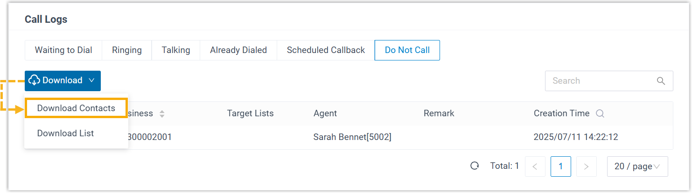
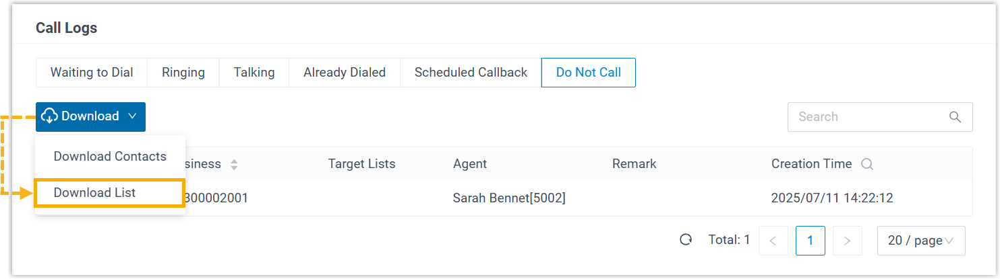

Export Do Not Call Data for Outbound Campaign
You can export Do Not Call (DNC) data for an outbound campaign, which can be used to review or import to other systems.
Procedure
- Log in to PBX web portal, go to .
- Click
 beside the desired campaign, then
scroll down to the Call Logs section.
beside the desired campaign, then
scroll down to the Call Logs section. - Under the Do Not Call tab, download the DNC data
according to your needs.
- To download DNC contacts list, click Download and
select Download Contacts.

A CSV file containing the contacts information is downloaded to your computer. - To download the DNC contacts details, click
Download and select Download
List.

A CSV file containing the DNC contacts as well as relevant creation details is downloaded to your computer.
- To download DNC contacts list, click Download and
select Download Contacts.